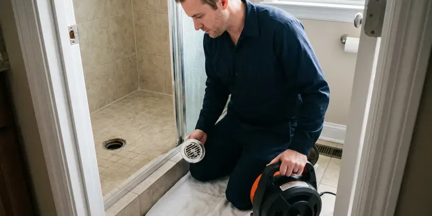
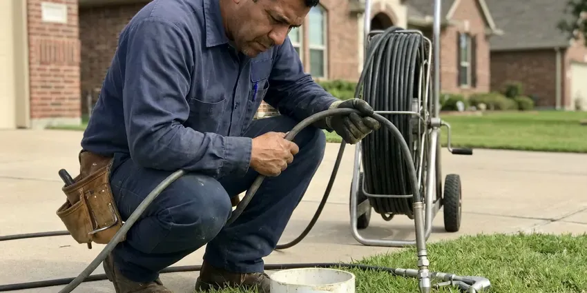

Sewer Line Cleaning in Clinton, MS
Toilets gurgling when the tub drains in Clinton, MS? Our techs clean the sewer line and show you what caused it.
- Same-Day Sewer Line Service
- Recorded Camera Inspections
- Trained Sewer Techs
- Maintenance Plans Available

Get Your Sewer Lateral Cleaned in Clinton, MS
We cable or jet the line, then check it on camera before we leave.
Local Sewer Line Cleaning in Clinton, MS
DFM Plumbing combines cable cleaning, hydro jetting and video inspection on sewer lines. Each has a role. Every cleaning comes with notes on the pipe type, depth and condition, which is useful if you ever sell.
Some of what we do:
- Maintenance scheduling for root-prone and grease-heavy lines
- Repeat backup diagnosis on camera
- Two-way cleanout installation

Additional Drain Services Services in Clinton, MS
From stubborn kitchen clogs to main sewer backups, our drain services in Clinton, MS clear the line and keep it clear with camera-verified results.


Drain Cleaning in Clinton

Hydro Jetting near Clinton


Customers
Why Choose DFM Plumbing for Sewer Line Cleaning in Clinton, MS?
Pricing comes first. You get the number before we start. Should the inspection show damage, you see it on screen and hear the options before we go further.
- Clear Records, Every job includes notes on pipe type, depth and condition for your files.
- Local Code, We know the Clinton codes that apply to sewer repairs and cleanouts.
- Current Tools, Color cameras and locators pinpoint any defect and its depth.
Citywide Coverage
From downtown to the farthest suburbs, we cover all of Clinton. Wide coverage, short drives. Our service area covers the whole town, so we can schedule quickly and keep the visit short.
Experienced Team
Each tech is trained to operate cameras and line locators. Exact locations matter. Marking the exact spot and depth means any repair is a small dig instead of a big trench.
Safety-First Approach
Sewer work calls for care. Safety regulations apply. Local plumbing codes and safety regulations guide the whole service, protecting both the crew and your property from the moment we arrive.
Trusted Certified Clinton Plumbing Services Professionals
At DFM Plumbing, we take pride in licensed, certified plumbing services throughout Clinton, MS. Those papers on the wall mean something. Every repair, install and maintenance visit follows strict safety and quality rules, and the plumbers doing the work carry recognized industry credentials.
Call Us Now PHCC Plumbing Contractor Recognition
PHCC Plumbing Contractor Recognition Better Business Bureau (BBB) Accreditation
Better Business Bureau (BBB) Accreditation Angi Certified Pro
Angi Certified Pro ISO 9001 Quality Management Certification
ISO 9001 Quality Management CertificationLateral and Sewer Line Cleaning in Clinton, MS
Preventative Sewer Line Maintenance in Clinton
Scheduled cleaning beats emergency calls. Roots grow back. Properties with older plumbing or nearby trees do well with periodic cleaning, often jetting, which clears buildup before it turns into a full blockage and extends the life of the line.

Root-Infested Sewer Line Cleaning in Clinton, MS
Roots are the top cause of blockages in established neighborhoods. Waste catches on them. After cutting the mass with a root saw, we jet the line to clear root hairs and leave the pipe clean, then show each entry point on camera.
Emergency Sewer Line Cleaning in Clinton, MS
Sewer backups pick bad times. Guests make it worse. Our emergency team handles urgent blockages and overflows with main line equipment and cleanup gear, getting the line open and limiting damage as quickly as possible.
Large Commercial Laterals in Clinton, MS
Big commercial laterals carry more solids. Volume adds wear. Our larger jetters handle big commercial pipe, focusing on interceptor outlets and long laterals, plus written reports for maintenance logs.
Urgent Sewer Backups in Clinton
Raw sewage in the house is an emergency. It gets top priority. An emergency tech clears the line, contains the mess and photographs the damage for insurance.
Sewer Line Cleaning for Rentals and HOAs in Clinton
Rentals see more clogs from wipes and grease. Turnover adds to it. We offer scheduled cleanings for landlords and property managers, and for HOAs we clean shared lines and document each building so the budget can be planned, coordinating access with tenants.
Routine Sewer Line Cleaning in Clinton
Routine cleaning clears slow buildup. Grease, paper and scale. We enter through a cleanout and run a sectional cable with the right blade for the pipe size, following with hydro jetting when the buildup is heavy, and most older lines do well with cleaning every one to two years.

Sewer Camera Inspection in Clinton, MS
A waterproof camera shows the pipe condition. Cracks and breaks show up. We can spot cracks, breaks, corrosion and root intrusion along with the exact location of any blockage, which lets us choose the right cleaning or repair without guesswork.
Sewer Lateral Cleaning Near Me in Clinton, MS
Knowing the local housing stock helps us work faster. Each neighborhood differs. We know which neighborhoods tend to have clay, cast iron or PVC laterals and what problems to expect, and that experience shows in the cleaning and the advice we give.
A good local sewer company answers and shows up. That is the bar. DFM Plumbing handles everything from a minor clog to a full backup with the right equipment, so you are not waiting on a second crew or a second trip.
DFM Plumbing at a Glance
- Fully licensed plumbing team covering Clinton, MS
- Same-day appointments and 24/7 emergency response
- Clear written estimates, no hidden fees
- 4.8-star rated by 503+ Mississippi customers
Clinton Map
Clinton Information
- Population
- 26,698
- Area codes
- Local
- Service area
- Clinton and towns within a 40 mile drive
- Nearby
- Jackson, Ridgeland, Madison, Pearl
Settling ground and mature trees both work against buried sewer pipe in Clinton, MS, opening joints that roots grow through over a few seasons. Slab and crawlspace foundations are typical, and soil movement under a slab can shift drain lines and supply pipes.
Talk to a Plumber
Reach out to DFM Plumbing for honest, reliable plumbing from people who know the trade in Clinton, MS.
Our Specialized Plumbing Services in Clinton, MS
At DFM Plumbing, you get every kind of plumbing service from one company across Clinton, MS. From leak detection to full system installs, our team works fast and charges fair prices on homes and commercial properties alike. Explore our core services below:


How It Goes When We Clean a Sewer Line in Clinton, MS
Here is what happens when you book a sewer line cleaning.
Request a Quote
Call (601) 265-9260 and tell us about any slow drains or backups. We give you a price range and schedule a time that suits you.
Clean the Lateral
We access the line through a cleanout and use cables or jetting to clear it. Roots, grease and debris are removed down to the street connection.
Camera and Report
We run a camera through the cleaned line and mark any problem spots. You get the video and our advice.
Frequently Asked Questions About Sewer Line Cleaning in Clinton
Cabling a sewer line in Clinton usually costs $200 to $500. Jetting runs $400 to $900. A recorded camera inspection usually adds $150 to $350, depending on the length of the line and the access point we use.
Root treatment products can slow regrowth after a mechanical cleaning, but they do not remove a root mass. Always clean first.
Please do not. They rarely help. Caustic products damage old pipe, fail on roots and make the job dangerous for the next plumber.
Drain cleaning covers single fixtures. The lateral is a separate job. A sink or tub drain serves one fixture, while the sewer line carries all the wastewater from the house to the city sewer or septic tank, so a sewer clog affects every drain.
Once or twice a year for homes with older pipe or big trees. Newer lines need less. If your line has backed up before, a regular schedule set by how fast it clogs is the best defense.
Not for cleaning. Clearing a clog needs none. If cleaning shows a need for excavation or a major repair, permits from the local building department are usually required, and we handle those applications.
Quarterly or twice a year is common. Grease drives it. Commercial kitchens put much more grease down the line, so they need service far more often than homes.
No. Permits are only required for repairs, replacements or adding new cleanouts, and we handle those when needed.
What Our Customers Say About Our Plumbing Experts

Daniel K.
A pipe burst in the garage ceiling at 11 at night. Someone answered on the second ring, and the plumber was in my driveway about fifty minutes later. He shut off the main, cut out the split section, and had water back on before 2 am.
Emergency Plumbing · Pearl, MS
Diane F.
My kitchen faucet had dripped for months and I finally got tired of hearing it at night. DFM Plumbing came out the next morning, replaced the cartridge and the O rings, and tightened a loose base that was letting water under the sink.
Faucet Repair · Ridgeland, MSPatricia H.
We had a slab leak that two other companies could not find. DFM Plumbing located it in under an hour with a listening device. They rerouted the line through the attic instead of breaking up the floor, so we kept our kitchen tile.
Slab Leak Repair · Pearl, MS
Paul B.
Our pit pump ran nonstop even in dry weather. The plumber found the check valve was stuck open, so the same water kept cycling back into the pit. New valve, new float switch, done in an hour. It runs quiet now.
Sump Pump · Pearl, MSCarlos V.
Our house still had galvanized pipe, and upstairs the shower was a trickle. The crew repiped everything in PEX over three days and patched every drywall hole before they left. The pressure difference is night and day.
Repiping · Clinton, MS
Sofia M.
Two new toilets went in during one visit. The tech set them on new wax rings and swapped the old supply lines. He also noticed our bathroom faucet dripping and replaced the cartridge while he was there. No mess left behind.
Toilet Installation · Vicksburg, MS